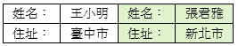
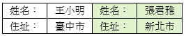

表格管理–進階設定

進階設定工作頁
(1)表格樣式：
I.一般套印：一般的表格
II.多欄套印：內容格式完全相同，但一次可以印出一個以上的表格。
III.一式1聯：如有複寫、留底或提供收據之類的表格，就會有一式多聯(如跨行匯款單).
 
一般套印：資料逐筆列印 多欄套印：一次列印多筆
(2)套印功能
I.輸入套印：提供表格輸入套印的功能，多欄式的表格不適用。
II.套印記錄存檔：勾選此項目並且有進行存檔設定套印記錄就會自動存檔。
III.表格領用登錄：勾選此項目，表格在進行套印時會先檢查已登錄之空白表格(如支票)
數量是否足夠。本項功能需配合領用登錄功能。

一般套印：資料逐筆列印 多欄套印：一次列印多筆
(2)套印功能
I.輸入套印：提供表格輸入套印的功能，多欄式的表格不適用。
II.套印記錄存檔：勾選此項目並且有進行存檔設定套印記錄就會自動存檔。
III.表格領用登錄：勾選此項目，表格在進行套印時會先檢查已登錄之空白表格(如支票)
數量是否足夠。本項功能需配合領用登錄功能。